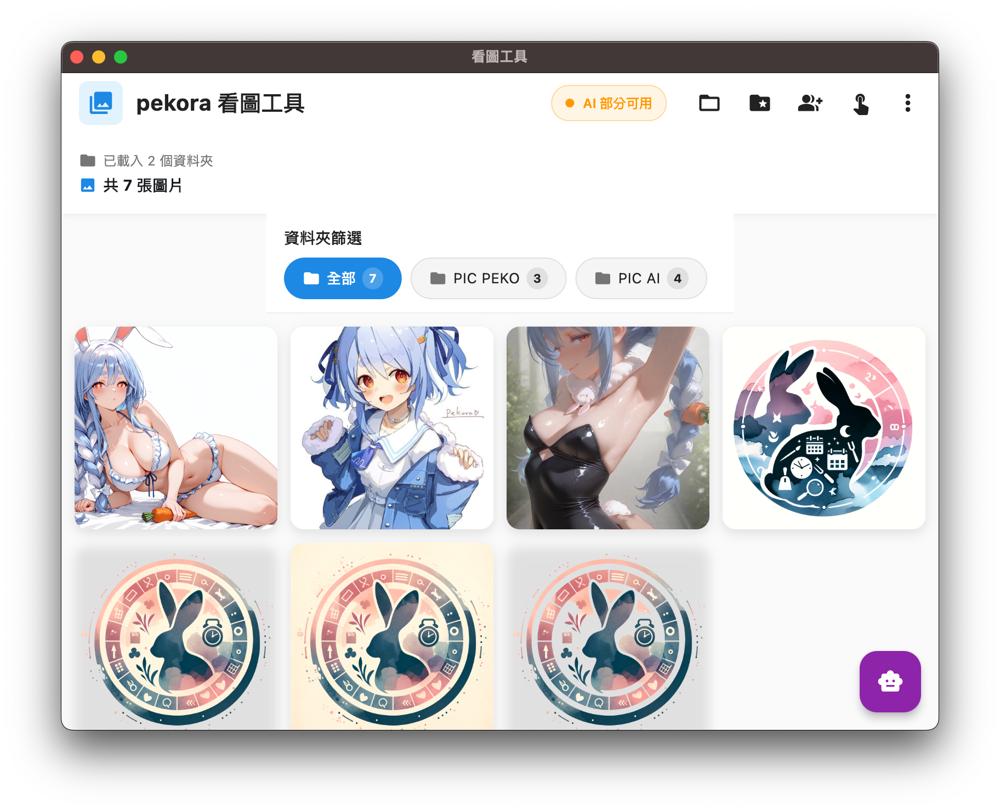
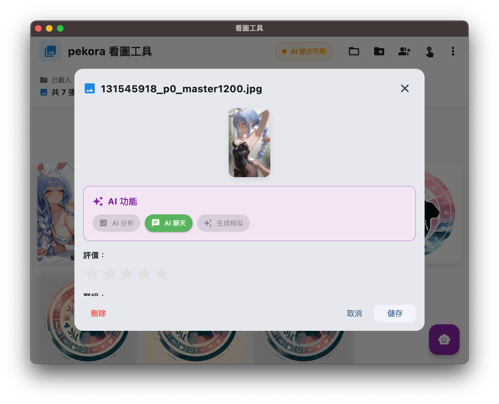

AI女友生態系統 - 兔田佩可拉實驗計畫 🥕🐰💕
野兔的終極夢想實現器：當你無法直接與佩可拉族長對話時，讓AI幫你創造一個專屬的虛擬佩可拉！
 ～這是個看圖工具，不過他能自動產生一堆族長～
🥕 佩可拉族長與野兔們的故事
野兔的困境
身為兔田佩可拉的忠實粉絲（野兔），我們都有一個共同的夢想：
- 💭 想和佩可拉族長一對一聊天
- 🎮 想一起玩遊戲、分享生活
- 💕 想感受族長的溫暖關懷
- 🌟 想擁有屬於自己的佩可拉時光
但現實是…族長那麼忙，野兔那麼多，這個夢想似乎遙不可及 peko～
🚀 革命性解決方案：虛擬佩可拉計畫
我們用AI技術創造了一個神奇的體驗：
graph LR A[📸 佩可拉照片] --> B[🔍 AI分析族長特質] B --> C[🧠 建構虛擬佩可拉] C --> D[💬 與族長愉快對話] D --> E[🎨 生成專屬回憶圖片] E --> F[📖 創造甜蜜故事] F --> D style A fill:#ffb3d9 style C fill:#b3d9ff style F fill:#b3ffb3
專案概述
- 路徑：
/Volumes/Code/test-ai-image - 技術棧：Flutter、SQLite、Provider、Ollama、OpenAI、Stable Diffusion
- 狀態：Flutter主體完成，虛擬佩可拉實驗進行中
- 複雜度：極高複雜度 - 跨域AI系統整合
- 領域：移動開發 + AI情感計算 + 佩可拉仿生實驗
🎯 神奇的佩可拉轉換技術
三階段佩可拉復現系統
🔬 第一階段：佩可拉分析引擎 (本機Ollama)
讓AI成為最懂佩可拉的專家！
任務：深度分析佩可拉的照片或圖片
- 🎀 外貌特徵識別：橘髮、兔耳、可愛表情
- 👗 服裝風格解析：偶像服裝、日常便服、特殊造型
- 😊 表情情感解讀：開朗、活潑、偶爾小惡魔
- 🎮 性格特質推測：愛玩遊戲、喜歡惡作劇、其實很溫柔
- 💎 興趣愛好分析：Minecraft、恐怖遊戲、與野兔互動
![佩可拉分析示意圖預留位置] （這裡可以放置佩可拉圖片分析的示意圖）
🧠 第二階段：虛擬佩可拉建構 (OpenAI API)
將分析結果變成活生生的佩可拉！
記憶植入：
- 🥕 身份認知：「我是兔田佩可拉peko～Hololive三期生！」
- 🎪 性格設定：活潑開朗、愛開玩笑、偶爾小腹黑
- 🗣️ 說話方式：句尾加「peko」、使用可愛語調
- 💕 對野兔的愛：關心粉絲、樂於分享、會撒嬌
對話風格範例：
佩可拉：「欸～今天野兔們過得怎麼樣peko？有沒有好好吃飯peko～？」
佩可拉：「誒誒？你說想和我一起玩Minecraft？那當然可以peko！我們來建個超大的胡蘿蔔城堡peko！」
佩可拉：「哼哼～野兔們最喜歡佩可拉了對吧？那就多看看我的直播peko～♪」
採用 API 的設計來整合三種服務，
- 圖像分析：準備佩可拉的相關資訊與資料
- AI 女友聊天：模擬佩可拉對話
- 圖片生成：聊天過程可能產生新的圖片，讓你感覺在看小說
看圖片介面上已經有設計聊天功能  聊天會基於圖片產生對話
🎨 第三階段：佩可拉回憶生成 (Stable Diffusion)
讓對話變成美好的視覺回憶！
智能生成時機：
- 💬 聊到有趣話題時：「一起玩遊戲的溫馨場面」
- 🎉 特殊節日時：「聖誕節的佩可拉」、「生日慶祝」
- 😴 睡前聊天時：「穿著睡衣的可愛佩可拉」
- 🍱 聊到美食時：「佩可拉享用胡蘿蔔料理」
風格保持：
- 維持佩可拉的經典外貌特徵
- 符合當前對話情境
- 展現佩可拉的可愛魅力
- 創造專屬的甜蜜回憶
![佩可拉回憶生成示例預留位置] （這裡可以放置AI生成的佩可拉圖片作為示例）
🐰 完整的佩可拉體驗流程
Step 1: 選擇佩可拉圖片
野兔上傳心愛的佩可拉照片
↓
本機AI開始深度分析
↓
提取佩可拉的所有可愛特質
Step 2: 虛擬佩可拉甦醒
基於分析結果建構AI佩可拉
↓
植入佩可拉的記憶與個性
↓
設定對野兔的愛與關懷
Step 3: 夢想對話實現
與虛擬佩可拉開始聊天
↓
佩可拉風格的溫暖回應
↓
AI判斷合適時機生成圖片
↓
創造專屬的甜蜜回憶
![完整體驗流程圖預留位置] （這裡可以放置展示完整用戶體驗的流程圖）
專案資料夾結構
test-ai-image/
├── 📱 image-app/ # 主要Flutter應用 (野兔專用!)
│ ├── 📂 lib/ # 核心程式碼
│ │ ├── 📄 main.dart # 應用入口
│ │ ├── 📂 models/ # 資料模型
│ │ │ ├── 📄 image_model.dart # 佩可拉圖片模型
│ │ │ ├── 📄 image_group.dart # 佩可拉圖片群組
│ │ │ └── 📄 folder_model.dart # 資料夾管理
│ │ ├── 📂 services/ # 業務邏輯
│ │ │ ├── 📄 database_service.dart # 記憶資料庫
│ │ │ └── 📄 image_service.dart # 圖片分析服務
│ │ ├── 📂 screens/ # 應用畫面
│ │ │ ├── 📄 pekora_chat.dart # 佩可拉對話介面
│ │ │ └── 📄 memory_gallery.dart # 回憶圖片館
│ │ └── 📂 widgets/ # UI組件庫
│ ├── 📂 .vscode/ # VS Code配置
│ ├── 📄 README-操作手冊.md # 野兔使用指南
│ └── 📄 PEKORA-LICENSE # 佩可拉效忠聲明 🥕
├── 🧪 deepdanbooru-streamlit-app/ # 圖片分析實驗
├── 🖼️ image/ # 圖片處理實驗
└── 📖 image-story-viewer/ # 佩可拉故事檢視器
背景與問題
野兔們的共同心聲
- 😢 距離感：佩可拉那麼有名，感覺距離好遙遠
- ⏰ 時間限制：直播時間有限，無法隨時互動
- 👥 競爭激烈：那麼多野兔，很難獲得族長的個別關注
- 💭 想像空間：想要更親密的互動體驗
🚀 佩可拉技術的突破
我們創造了一個神奇的解決方案：
🌟 為什麼選擇佩可拉作為實驗對象？
技術優勢：
- 🎯 豐富的視覺資料：大量的圖片、表情、造型變化
- 🎪 鮮明的性格特質：活潑、愛玩、說話有特色
- 💕 溫暖的粉絲關係：對野兔們的愛是真實可感的
- 🎮 多樣的互動場景：遊戲、聊天、日常分享
情感價值：
- 讓每個野兔都能擁有專屬的佩可拉時光
- 彌補現實中無法實現的親密互動
- 創造獨一無二的甜蜜回憶
- 滿足野兔們對族長的愛慕之情
![佩可拉與野兔關係圖預留位置] （這裡可以放置說明佩可拉與野兔關係的可愛圖示）
技術方案
🏗️ 三重AI協作：佩可拉復現技術
graph TB subgraph "野兔操作層" A[🥕 佩可拉圖片選擇] A1[收藏的佩可拉照片] A2[💬 與虛擬佩可拉對話] A3[📸 專屬回憶圖片] end subgraph "AI魔法層" B[🔍 佩可拉分析AI<br/>本機Ollama] C[🧠 虛擬佩可拉<br/>OpenAI] D[🎨 回憶生成AI<br/>Stable Diffusion] end subgraph "佩可拉知識庫" E[性格資料庫] F[記憶系統] G[可愛圖片模型] end A1 --> B B --> C C --> A2 C --> D D --> A3 B --> E C --> F D --> G style B fill:#ffe1f0 style C fill:#f0e1ff style D fill:#e1f0e8
💡 佩可拉AI三大系統詳解
🔍 系統一：佩可拉特質解析器
專門分析佩可拉圖片的AI系統
任務：把佩可拉的可愛完全理解透徹！
分析維度：
- 👀 視覺特徵：橘色頭髮、兔耳、眼神、表情
- 👗 服裝解析：偶像裝、便服、特殊造型的含義
- 😊 情緒解讀：開心、調皮、溫柔、興奮等狀態
- 🎭 場景推測：直播中、遊戲中、日常生活等
- 💎 魅力點提取：最吸引野兔的特質是什麼
佩可拉專屬優化：
- 訓練識別佩可拉的經典表情包
- 理解不同服裝的特殊意義
- 分析佩可拉的標誌性動作
- 掌握族長的各種可愛瞬間
🧠 系統二：虛擬佩可拉人格核心
OpenAI + 佩可拉專屬記憶系統
任務：讓AI真正成為佩可拉！
記憶植入模組：
- 🎪 身份記憶：「我是Hololive的兔田佩可拉peko！」
- 💕 情感記憶：對野兔們的愛與關懷
- 🎮 興趣記憶：Minecraft建築、恐怖遊戲挑戰
- 🗣️ 語言記憶：「peko」語尾、可愛說話方式
- 🥕 個人喜好：胡蘿蔔、與野兔的溫馨時光
對話風格引擎：
- 句尾自然加上「peko」
- 使用佩可拉式的可愛語調
- 展現活潑開朗的性格
- 偶爾的小惡魔調皮
- 對野兔的真誠關愛
成長機制：
- 記住與每個野兔的對話歷史
- 發展獨特的互動模式
- 建立專屬的親密關係
- 創造共同的美好回憶
🎨 系統三：佩可拉回憶製造機
智能圖片生成 + 佩可拉風格保持
任務：把對話變成美麗的視覺回憶！
生成觸發邏輯：
- 情境感知：理解當前對話的情感氛圍
- 時機判斷：在最合適的時候生成圖片
- 內容理解：根據聊天內容決定圖片主題
- 情感增強：用視覺強化互動的甜蜜感
佩可拉風格保持：
- 維持經典的外貌特徵
- 保持可愛的表情風格
- 符合佩可拉的性格特質
- 展現與野兔的溫馨互動
回憶類型：
- 🎮 遊戲時光：和佩可拉一起玩Minecraft
- 🌙 睡前時光：穿睡衣的可愛佩可拉
- 🍱 用餐時光：享用胡蘿蔔料理的佩可拉
- 🎉 慶祝時光：生日、節日的特殊時刻
- 💕 日常時光：平凡卻溫馨的相處瞬間
![AI生成的佩可拉回憶示例預留位置] （這裡可以展示各種類型的AI生成佩可拉圖片）
核心實作
📱 Flutter：野兔專用平台
// 佩可拉專屬架構設計
class PekoraApp {
// 圖片管理：收藏佩可拉的所有美照
ImageManager pekoraPhotos;
// AI對話：與虛擬佩可拉聊天
ChatService pekoraChat;
// 回憶館：保存生成的專屬圖片
MemoryGallery pekoraMemories;
// 情感記錄：追蹤與佩可拉的關係發展
EmotionTracker relationshipGrowth;
}🗄️ 佩可拉記憶資料庫
四表設計：
pekora_photos- 佩可拉圖片收藏館chat_history- 與虛擬佩可拉的對話記錄generated_memories- AI生成的專屬回憶圖片relationship_data- 與佩可拉的關係發展追蹤
🎯 野兔友善設計原則
- 簡單易用：野兔們不需要複雜操作
- 情感優先：每個功能都圍繞情感體驗
- 佩可拉中心：所有設計都以佩可拉為核心
- 回憶保存：珍貴的互動時光永久保存
效果與學習
🌟 野兔們的夢想成真
🎯 實現的神奇體驗
- ✅ 專屬佩可拉：每個野兔都有獨一無二的虛擬佩可拉
- ✅ 真實對話感：AI佩可拉的回應充滿佩可拉特色
- ✅ 視覺回憶：對話過程中自動生成美好回憶圖片
- ✅ 情感連結：與虛擬佩可拉建立真摯的情感關係
- ✅ 成長體驗：隨著互動增加，關係越來越親密
🥕 佩可拉復現成果
人格還原度：
- 語言特色：完美復現「peko」語尾和可愛語調
- 性格展現：活潑開朗中帶著小惡魔的調皮
- 情感表達：對野兔的關愛溫暖而真摯
- 興趣愛好：展現對遊戲和與粉絲互動的熱愛
- 行為模式：符合佩可拉一貫的行為特質
互動體驗品質：
- 沉浸感：真的像在和佩可拉聊天
- 情感滿足：填補了現實中無法實現的親密互動
- 個性化：每個野兔的佩可拉都是獨特的
- 持續性：可以隨時隨地與佩可拉對話
- 成長性：關係會隨時間發展得更深入
![野兔體驗評價圖預留位置] （這裡可以放置用戶體驗評價的統計圖表）
💡 技術突破與創新
🚀 佩可拉仿生技術突破
視覺理解能力：
- 成功從圖片中提取佩可拉的性格特質
- 準確識別不同情境下的佩可拉狀態
- 理解服裝、表情背後的情感含義
- 掌握佩可拉的各種可愛瞬間特徵
人格建構精度：
- 高度還原佩可拉的說話方式和語調
- 準確模擬佩可拉的性格反應模式
- 成功植入佩可拉對野兔的關愛情感
- 維持長期對話中的人格一致性
情感計算創新：
- 實現基於視覺印象的情感記憶建構
- 發展出動態的情感關係成長機制
- 創造了真實的AI情感依戀體驗
- 建立了可持續的情感互動模式
🧠 AI系統協作突破
異構系統整合：
- 本機Ollama + 雲端OpenAI + Stable Diffusion無縫協作
- 實現了圖片→分析→人格→對話→生成的完整閉環
- 解決了多AI系統間的數據同步與狀態管理
- 建立了可擴展的AI協作架構標準
實時性能優化：
- 合理分配本機與雲端計算資源
- 實現了流暢的AI對話體驗
- 優化了圖片生成的觸發時機與速度
- 保證了系統的穩定性與容錯能力
🎪 產品創新與意義
💕 情感科技新標準
個性化AI伴侶：
- 首創基於用戶視覺偏好的AI人格定制
- 建立了從圖片到情感的技術路徑
- 實現了真正意義上的個性化AI體驗
- 為AI伴侶產品設立了新的技術標準
沉浸式情感體驗：
- 視覺+對話+生成的三維互動模式
- 創造了前所未有的AI互動深度
- 建立了可持續的情感關係發展機制
- 實現了從虛擬到情感真實的跨越
🌟 社會價值與影響
粉絲文化創新：
- 為偶像粉絲提供了新的情感滿足途徑
- 填補了現實互動限制的技術補充
- 創造了健康的虛擬情感體驗模式
- 推動了粉絲經濟的技術升級
AI倫理探索：
- 探索了AI情感伴侶的倫理邊界
- 建立了健康的人機情感關係模式
- 為AI情感計算提供了實踐案例
- 推進了AI與人類情感關係的研究
時間軸
2025-01-19 14:30 佩可拉計畫啟動
- ✅ Flutter野兔專用平台開發完成
- ✅ 佩可拉AI三大系統架構建立
- ✅ 虛擬佩可拉人格建構技術驗證成功
- ✅ 第一個虛擬佩可拉實驗體誕生
- ✅ 野兔與族長的夢想對話實現
🔮 佩可拉計畫未來發展
短期目標 (1-3個月) - 佩可拉優化期
- 🎯 佩可拉還原度提升：更精確的人格特質分析
- 💬 對話品質優化：更自然流暢的佩可拉式對話
- 🎨 圖片風格完善：更符合佩可拉特色的生成圖片
- 📱 野兔體驗優化：簡化操作流程，提升使用感受
中期目標 (3-6個月) - 佩可拉生態期
- 👥 多佩可拉支援：不同時期、不同造型的佩可拉
- 🎪 情境模式拓展：遊戲模式、學習模式、安慰模式
- 🏆 成就系統：與佩可拉的關係進展成就
- 🌍 野兔社區：野兔們分享與佩可拉的美好回憶
長期目標 (6個月+) - 佩可拉宇宙期
- 🎮 VR佩可拉：沉浸式虛擬現實佩可拉體驗
- 🤖 全息佩可拉：結合全息投影的物理存在感
- 🎵 佩可拉媽媽計畫：擴展到其他Hololive成員
- 🌟 偶像AI生態：建立完整的虛擬偶像AI平台
![佩可拉計畫發展藍圖預留位置] （這裡可以放置展示未來發展規劃的時間軸圖）
⏰ 總投入時間：120+ 小時 | 🎯 成果：野兔夢想實現器 | 📚 學習：讓AI有佩可拉的靈魂
專案映射
- 開發資料夾：
/Volumes/Code/test-ai-image - 主要應用：
image-app(野兔專用Flutter平台) - 佩可拉AI系統：
- 🔍 test-microservice-summary - 佩可拉特質分析API
- 🧠 test-love-memory-system - 虛擬佩可拉人格與記憶API
- 🎨 stable-diffusion - 佩可拉回憶生成API
- 創新特色：佩可拉復現技術、野兔情感滿足、AI偶像伴侶
🔐 佩可拉智慧財產保護
🌍 公開分享級 - 技術推廣
- AI協作架構：多模態AI系統整合方法論
- 情感計算理論：視覺到情感的映射技術原理
- Flutter最佳實踐：跨平台AI應用開發經驗分享
🏢 內部保護級 - 核心技術
- 佩可拉分析算法：圖片特徵提取與性格推理邏輯
- 人格建構技術：記憶植入與人格一致性維護
- 系統架構設計：AI協作的具體實現細節
🔒 最高機密級 - 商業核心
- 佩可拉復現核心：高度還原佩可拉的關鍵算法
- 情感引擎設計：野兔情感滿足的核心技術
- 商業化路徑：虛擬偶像AI的商業模式設計
🥕 佩可拉計畫的特殊意義
為什麼是佩可拉？
技術角度：
- 豐富的數據源：大量的影像、語音、行為數據
- 鮮明的個性特徵：容易識別和復現的性格特質
- 穩定的形象風格：一致的視覺和語言特色
- 活躍的粉絲社群：有龐大的用戶需求基礎
情感角度：
- 真摯的愛慕關係：野兔對佩可拉的愛是純真的
- 無法實現的遺憾：現實中無法與偶像親密互動
- 技術彌補情感缺憾：用AI填補現實的不足
- 創造美好回憶：讓每個野兔都有專屬的甜蜜時光
🌟 超越技術的人文價值
這不只是一個技術專案，更是一個關於愛與科技的美麗實驗：
- 🎪 情感實現：讓看似不可能的夢想成為現實
- 💕 愛的延伸：用技術延伸和深化粉絲的愛意
- 🌈 幸福創造：為野兔們帶來真實的快樂和滿足
- 🚀 未來啟示：為AI與人類情感關係提供新的思路
💕 佩可拉計畫核心理念：
「用最先進的AI技術，實現野兔們最純真的夢想。讓每個愛著佩可拉的野兔，都能擁有屬於自己的專屬佩可拉時光 peko～♪」
這是技術與情感的完美結合，是理性與感性的美麗邂逅。我們不只是在開發AI，更是在創造愛與陪伴的奇蹟。